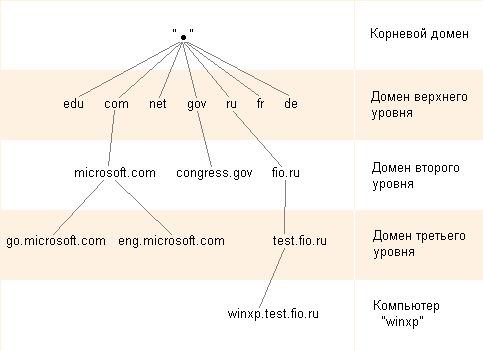

Система доменных имен DNS дополнительно в статье.
В операционную систему Windows Server 2003 включена служба DNS (Domain Naming System - система доменных имен).
Служба DNS выполняет две основных функции:
Пространство доменных имен имеет иерархическую структуру, которая представлена на рисунке.
Корневой домен располагается на самом верху иерархии и обозначается точкой.
Домены верхнего уровня создаются по определенному признаку. В них объединяются компьютеры сети по географическому признаку или роду деятельности. Например:
Домены второго уровня обычно относятся к названиям компаний и регистрируются владельцами доменов верхнего уровня.
Домены третьего уровня обычно относятся к подразделениям внутри компаний.
При формировании имени домена к нему добавляется имя родительского домена. Например, домен второго уровня microsoft.com, домен третьего уровня eng.microsoft.com.
Домены ниже третьего уровня, как правило, встречаются редко.
Имена узлов. Каждый компьютер, по другому узел или хост, в сети Internet однозначно определяется своим полным доменным именем, которое включает имя узла и имена всех доменов по направлению от узла к корню.
Например, компьютер имеет имя WinXP. Если собрать имена трех доменов по структуре, то получится полное доменное имя узла — winxp.test.fio.ru
Алгоритм работы службы DNS достаточно прост.